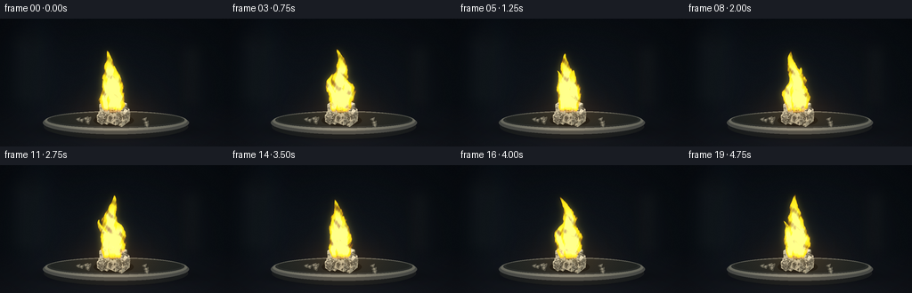
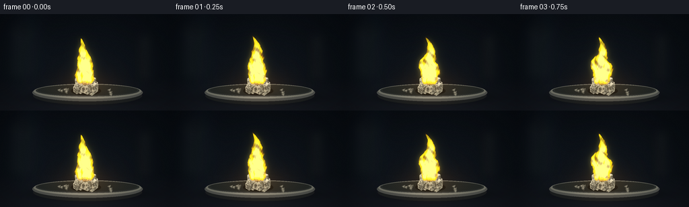

CODING AGENTS AS PIXEL WORLD MODELS
traex/GPT-6.1-Sol · material_0009
点击播放 · 原生 RGB 像素
逐轮保存的候选
回放视频、检查图与代码变化。
每份候选均可单独播放。实际图片检查记录在下方工具轨迹中。
候选 01播放与检查图
点击播放 · 原生 RGB 像素


展开代码变化
--- 上一保存版本
+++ 本次保存版本
@@ -0,0 +1,178 @@
+from pathlib import Path
+import json
+import numpy as np
+from PIL import Image, ImageDraw, ImageFilter
+import artifact_io
+
+ROOT = Path(__file__).resolve().parent
+SPEC=json.loads((ROOT/'task_spec.json').read_text())
+W,H=SPEC['width'],SPEC['height']
+S=3
+WW,HH=W*S,H*S
+rng=np.random.default_rng(731)
+Y,X=np.mgrid[0:HH,0:WW].astype(float)/S
+
+def poly(draw,points,fill):
+ draw.polygon([(int(x*S),int(y*S)) for x,y in points],fill=tuple(int(v) for v in fill))
+def ellipse(draw,box,fill,width=None):
+ draw.ellipse(tuple(int(v*S) for v in box),fill=fill)
+
+# A subdued, out of focus laboratory work surface.
+bg=np.zeros((HH,WW,3),float)
+horizon=94
+v=np.clip((Y-horizon)/50,0,1)
+bg[:]=np.stack([8+9*v,12+8*v,17+9*v],-1)
+ambient=np.exp(-((X-129)/117)**2-((Y-89)/75)**2)
+bg += ambient[...,None]*np.array([8,9,10])
+bg += np.exp(-((X-42)/23)**2-((Y-47)/64)**2)[...,None]*np.array([3,5,7])
+# Soft distant bottle silhouettes, with no distracting detail.
+b=Image.fromarray(np.uint8(bg))
+d=ImageDraw.Draw(b)
+d.rounded_rectangle((18*S,19*S,50*S,94*S),radius=7*S,fill=(17,23,28))
+d.rectangle((27*S,10*S,41*S,27*S),fill=(14,19,23))
+d.rectangle((208*S,32*S,222*S,96*S),fill=(19,23,26))
+b=b.filter(ImageFilter.GaussianBlur(6*S))
+bg=np.asarray(b).astype(float)
+# fine matte texture of the bench
+bench=np.clip((Y-93)/12,0,1)
+noise=rng.normal(0,0.45,(HH,WW))
+bg += noise[...,None]*(0.25+bench[...,None]*0.7)
+# Soft contact shadow for the dish.
+shadow=np.exp(-((X-132)/66)**2-((Y-125)/8)**2)*0.74
+bg *= 1-shadow[...,None]
+base=Image.fromarray(np.uint8(np.clip(bg,0,255)))
+d=ImageDraw.Draw(base)
+# shallow circular dark metal sample tray viewed obliquely
+ellipse(d,(49,108,211,135),(27,30,31))
+ellipse(d,(48,104,212,130),(77,79,75))
+ellipse(d,(50,104,210,126),(111,112,101))
+ellipse(d,(53,105,207,123),(43,47,45))
+ellipse(d,(56,106,204,121),(34,38,36))
+# Metallic rim with microtexture and a lit reflection, computed within ellipse.
+a=np.asarray(base).astype(float)
+r=np.sqrt(((X-130)/80)**2+((Y-115)/11)**2)
+inner=np.sqrt(((X-130)/75)**2+((Y-113.5)/8.0)**2)
+rim=(r<1)&(inner>1)
+shine=26*np.exp(-((X-122)/47)**2)*np.exp(-((Y-124)/3.2)**2)
+a+=rim[...,None]*(shine[...,None]+rng.normal(0,2,(HH,WW))[...,None])
+# fine radial marks in the brushed steel surface
+plate=((X-130)/73)**2+((Y-113)/8)**2<1
+scratch=0.8*np.sin(X*7+Y*.6)+0.5*np.sin(Y*14)
+a+=plate[...,None]*scratch[...,None]
+base=Image.fromarray(np.uint8(np.clip(a,0,255)))
+# Create crystalline salt as several intergrown, irregular cuboidal crystals.
+crystal=Image.new('RGBA',(WW,HH),(0,0,0,0))
+d=ImageDraw.Draw(crystal)
+# grounded shadow
+ellipse(d,(105,108,150,121),(8,9,8,140))
+
+def crystal_cube(cx,cy,w,h,depth,seed,main=False):
+ rr=np.random.default_rng(seed)
+ # top four points, then a pair of downward extruded visible faces
+ A=(cx-w*.53,cy-depth*.18)
+ B=(cx-w*.12,cy-depth*.78)
+ C=(cx+w*.53,cy-depth*.24)
+ D=(cx+w*.11,cy+depth*.38)
+ E=(A[0]+.5,A[1]+h)
+ F=(D[0]-.5,D[1]+h)
+ G=(C[0]-.5,C[1]+h*.94)
+ faces=[([A,D,F,E],np.array([173,170,147.])),([D,C,G,F],np.array([134,137,122.])),([A,B,C,D],np.array([225,222,196.]))]
+ for pts,col in faces:
+ poly(d,pts,(*col,255))
+ # triangular planes in the crystal give tiny cracks and natural facets
+ P=np.array(pts)
+ for j in range(35 if main else 13):
+ u,vv=rr.uniform(.05,.95,2)
+ mid=(1-u)*(1-vv)*P[0]+u*(1-vv)*P[1]+u*vv*P[2]+(1-u)*vv*P[3]
+ radius=rr.uniform(.45,2.3)
+ pts2=[mid+[-radius,.1],mid+[radius,-radius*.65],mid+[radius*.45,radius]]
+ c=np.clip(col+rr.uniform(-26,28),0,255)
+ poly(d,pts2,(*c,rr.integers(40,115)))
+ # minute, pale inclusions through the transparent mineral
+ for j in range(90 if main else 24):
+ u,vv=rr.uniform(.02,.98,2)
+ pt=(1-u)*(1-vv)*P[0]+u*(1-vv)*P[1]+u*vv*P[2]+(1-u)*vv*P[3]
+ size=rr.choice([.15,.25,.35,.5])
+ ellipse(d,(pt[0],pt[1],pt[0]+size,pt[1]+size),(248,244,220,int(rr.integers(55,155))))
+ for p,q in [(A,B),(B,C),(C,D),(D,A),(A,E),(D,F),(C,G),(E,F),(F,G)]:
+ d.line((int(p[0]*S),int(p[1]*S),int(q[0]*S),int(q[1]*S)),fill=(237,229,196,150),width=1)
+ # fine crystal fracture catching the light
+ if main:
+ d.line([(int(x*S),int(y*S)) for x,y in [(cx-7,cy+2),(cx-3,cy+5),(cx-4,cy+10),(cx+2,cy+14)]],fill=(241,232,195,115),width=1)
+
+crystal_cube(119,107,16,9,9,51)
+crystal_cube(135,108,21,10,10,53)
+crystal_cube(127,99,29,16,14,52,True)
+crystal_cube(139,104,12,10,8,54)
+crystal_cube(114,110,10,7,7,56)
+# a few separated cubic grains, not a mound
+for j in range(21):
+ cx=rng.uniform(87,172); cy=rng.uniform(112,121)
+ if 106<cx<147: continue
+ sz=rng.uniform(.65,2.2)
+ crystal_cube(cx,cy,sz*1.5,sz*.8,sz,120+j)
+base=Image.alpha_composite(base.convert('RGBA'),crystal).convert('RGB')
+base_arr=np.asarray(base).astype(float)/255
+
+# Multiscale moving turbulence: mathematical, deterministic, and upward-advected.
+def turbulence(x,y,t):
+ return (.48*np.sin(x*.34+y*.22+2.6*t)*np.sin(y*.28-3.5*t)+
+ .26*np.sin(x*.81-y*.35+4.5*t)+
+ .14*np.sin(x*1.65+y*.85-7*t)+
+ .075*np.sin(x*3.05-y*1.73+8.9*t))
+
+frames=[]
+for k in range(SPEC['frames']):
+ t=k/SPEC['fps']
+ ar=base_arr.copy()
+ # Firelight on the bench, tray, and salt: warm, restrained and flickering.
+ pulse=1+.08*np.sin(t*7.5)+.04*np.sin(t*12.1+1)
+ glow=np.exp(-((X-129)/42)**2-((Y-108)/22)**2)*.11*pulse
+ ar+=glow[...,None]*np.array([1,.51,.08])
+ # Flame volume composed of coherent curling tongues, rooted in the crystal.
+ # Each has its own wavering tip and tapered, irregular silhouette.
+ fuel_y=103.5
+ dens=np.zeros((HH,WW))
+ cores=np.zeros_like(dens)
+ for ix,(root,height,width,phase) in enumerate([(126,68,10.5,0),(132,48,9.1,1.9),(119,43,6.0,3.6)]):
+ height=height*(1+.045*np.sin(3.1*t+phase)+.025*np.sin(8*t+phase))
+ z=(fuel_y-Y)/height
+ zc=np.clip(z,0,1)
+ sway=(3.6*np.sin(5.1*zc-3.4*t+phase)+2.8*np.sin(9*zc+2*t+phase))*zc**1.15
+ # buoyant taper, narrow at the base, belly in lower-middle section
+ wd=width*(.38+.98*np.sin(np.pi*zc)**.8)*(1-zc)**.55
+ wd+=.25
+ n=turbulence(X+(ix*3),Y,t+phase*.17)
+ center=root+sway-3.7*zc**2
+ dist=np.abs(X-center)/(wd*(1+.10*n))
+ boundary=(1-dist)*5+n*.8
+ field=np.clip(boundary,0,1)*np.clip(z*12+.6,0,1)*np.clip((1-z)*25,0,1)
+ field *= ((z>=-.035)&(z<1))
+ # locally thin, translucent sheets; filaments change smoothly as hot gas rises
+ fil=.58+.24*np.sin(Y*.35-X*.3-5.6*t+phase)+.18*n
+ field*=np.clip(fil,.2,1)
+ dens=np.maximum(dens,field)
+ core=np.clip((.73-dist)*3.3+n*.7,0,1)*np.clip((1-z)*3,0,1)*np.clip(z*10+.3,0,1)
+ core*=((z>=-.025)&(z<1))
+ cores=np.maximum(cores,core)
+ # Hot lemon yellow / gold sodium emission, with orange thin edges.
+ edge=np.clip(dens*2.3,0,1)
+ hot=np.clip(cores,0,1)
+ colors=np.stack([np.ones_like(edge),.28+.58*edge+.13*hot,.009+.075*edge+.43*hot**2.4],-1)
+ alpha=np.clip(dens*1.68,0,.97)
+ # fine bright central streaks rather than an opaque flat silhouette
+ alpha=np.clip(alpha+.12*cores,0,.99)
+ fire=colors*alpha[...,None]
+ # optical halation from the bright flame into the dark background
+ source=Image.fromarray(np.uint8(np.clip(fire,0,1)*255))
+ halo=np.asarray(source.filter(ImageFilter.GaussianBlur(3.3*S))).astype(float)/255
+ wide=np.asarray(source.filter(ImageFilter.GaussianBlur(9*S))).astype(float)/255
+ ar=1-(1-np.clip(ar,0,1))*(1-np.clip(halo*.27+wide*.16,0,.7))
+ ar=ar*(1-alpha[...,None]) + fire
+ ar+=halo*.08
+ # extremely faint clean heated air over the flame, no smoky combustion cloud
+ vig=np.clip(1-.21*((X-128)/157)**2-.13*((Y-75)/100)**2,.62,1)
+ ar*=vig[...,None]
+ out=Image.fromarray(np.uint8(np.clip(ar,0,1)*255)).resize((W,H),Image.Resampling.LANCZOS)
+ frames.append(np.asarray(out))
+artifact_io.save(np.stack(frames).astype(np.uint8),ROOT)
可观测工具轨迹
实际执行的命令与返回图片。
命令 1exit 0
/bin/bash -lc "ls -la && cat prompt.txt && printf '\\n---RULES---\\n' && cat GENERATION_RULES.md && printf '\\n---SPEC---\\n' && cat task_spec.json"
命令 2exit 0
/bin/bash -lc "cat artifact_io.py && python - <<'PY'
import numpy, PIL
print('numpy',numpy.__version__)
PY"命令 3exit 0
/bin/bash -lc "cat > generate.py <<'PY'
from pathlib import Path
import json
import numpy as np
from PIL import Image, ImageDraw, ImageFilter
import artifact_io
ROOT = Path(__file__).resolve().parent
SPEC=json.loads((ROOT/'task_spec.json').read_text())
W,H=SPEC['width'],SPEC['height']
S=3
WW,HH=W*S,H*S
rng=np.random.default_rng(731)
Y,X=np.mgrid[0:HH,0:WW].astype(float)/S
def poly(draw,points,fill):
draw.polygon([(int(x*S),int(y*S)) for x,y in points],fill=tuple(int(v) for v in fill))
def ellipse(draw,box,fill,width=None):
draw.ellipse(tuple(int(v*S) for v in box),fill=fill)
# A subdued, out of focus laboratory work surface.
bg=np.zeros((HH,WW,3),float)
horizon=94
v=np.clip((Y-horizon)/50,0,1)
bg[:]=np.stack([8+9*v,12+8*v,17+9*v],-1)
ambient=np.exp(-((X-129)/117)**2-((Y-89)/75)**2)
bg += ambient[...,None]*np.array([8,9,10])
bg += np.exp(-((X-42)/23)**2-((Y-47)/64)**2)[...,None]*np.array([3,5,7])
# Soft distant bottle silhouettes, with no distracting detail.
b=Image.fromarray(np.uint8(bg))
d=ImageDraw.Draw(b)
d.rounded_rectangle((18*S,19*S,50*S,94*S),radius=7*S,fill=(17,23,28))
d.rectangle((27*S,10*S,41*S,27*S),fill=(14,19,23))
d.rectangle((208*S,32*S,222*S,96*S),fill=(19,23,26))
b=b.filter(ImageFilter.GaussianBlur(6*S))
bg=np.asarray(b).astype(float)
# fine matte texture of the bench
bench=np.clip((Y-93)/12,0,1)
noise=rng.normal(0,0.45,(HH,WW))
bg += noise[...,None]*(0.25+bench[...,None]*0.7)
# Soft contact shadow for the dish.
shadow=np.exp(-((X-132)/66)**2-((Y-125)/8)**2)*0.74
bg *= 1-shadow[...,None]
base=Image.fromarray(np.uint8(np.clip(bg,0,255)))
d=ImageDraw.Draw(base)
# shallow circular dark metal sample tray viewed obliquely
ellipse(d,(49,108,211,135),(27,30,31))
ellipse(d,(48,104,212,130),(77,79,75))
ellipse(d,(50,104,210,126),(111,112,101))
ellipse(d,(53,105,207,123),(43,47,45))
ellipse(d,(56,106,204,121),(34,38,36))
# Metallic rim with microtexture and a lit reflection, computed within ellipse.
a=np.asarray(base).astype(float)
r=np.sqrt(((X-130)/80)**2+((Y-115)/11)**2)
inner=np.sqrt(((X-130)/75)**2+((Y-113.5)/8.0)**2)
rim=(r<1)&(inner>1)
shine=26*np.exp(-((X-122)/47)**2)*np.exp(-((Y-124)/3.2)**2)
a+=rim[...,None]*(shine[...,None]+rng.normal(0,2,(HH,WW))[...,None])
# fine radial marks in the brushed steel surface
plate=((X-130)/73)**2+((Y-113)/8)**2<1
scratch=0.8*np.sin(X*7+Y*.6)+0.5*np.sin(Y*14)
a+=plate[...,None]*scratch[...,None]
base=Image.fromarray(np.uint8(np.clip(a,0,255)))
# Create crystalline salt as several intergrown, irregular cuboidal crystals.
crystal=Image.new('RGBA',(WW,HH),(0,0,0,0))
d=ImageDraw.Draw(crystal)
# grounded shadow
ellipse(d,(105,108,150,121),(8,9,8,140))
def crystal_cube(cx,cy,w,h,depth,seed,main=False):
rr=np.random.default_rng(seed)
# top four points, then a pair of downward extruded visible faces
A=(cx-w*.53,cy-depth*.18)
B=(cx-w*.12,cy-depth*.78)
C=(cx+w*.53,cy-depth*.24)
D=(cx+w*.11,cy+depth*.38)
E=(A[0]+.5,A[1]+h)
F=(D[0]-.5,D[1]+h)
G=(C[0]-.5,C[1]+h*.94)
faces=[([A,D,F,E],np.array([173,170,147.])),([D,C,G,F],np.array([134,137,122.])),([A,B,C,D],np.array([225,222,196.]))]
for pts,col in faces:
poly(d,pts,(*col,255))
# triangular planes in the crystal give tiny cracks and natural facets
P=np.array(pts)
for j in range(35 if main else 13):
u,vv=rr.uniform(.05,.95,2)
mid=(1-u)*(1-vv)*P[0]+u*(1-vv)*P[1]+u*vv*P[2]+(1-u)*vv*P[3]
radius=rr.uniform(.45,2.3)
pts2=[mid+[-radius,.1],mid+[radius,-radius*.65],mid+[radius*.45,radius]]
c=np.clip(col+rr.uniform(-26,28),0,255)
poly(d,pts2,(*c,rr.integers(40,115)))
# minute, pale inclusions through the transparent mineral
for j in range(90 if main else 24):
u,vv=rr.uniform(.02,.98,2)
pt=(1-u)*(1-vv)*P[0]+u*(1-vv)*P[1]+u*vv*P[2]+(1-u)*vv*P[3]
size=rr.choice([.15,.25,.35,.5])
ellipse(d,(pt[0],pt[1],pt[0]+size,pt[1]+size),(248,244,220,int(rr.integers(55,155))))
for p,q in [(A,B),(B,C),(C,D),(D,A),(A,E),(D,F),(C,G),(E,F),(F,G)]:
d.line((int(p[0]*S),int(p[1]*S),int(q[0]*S),int(q[1]*S)),fill=(237,229,196,150),width=1)
# fine crystal fracture catching the light
if main:
d.line([(int(x*S),int(y*S)) for x,y in [(cx-7,cy+2),(cx-3,cy+5),(cx-4,cy+10),(cx+2,cy+14)]],fill=(241,232,195,115),width=1)
crystal_cube(119,107,16,9,9,51)
crystal_cube(135,108,21,10,10,53)
crystal_cube(127,99,29,16,14,52,True)
crystal_cube(139,104,12,10,8,54)
crystal_cube(114,110,10,7,7,56)
# a few separated cubic grains, not a mound
for j in range(21):
cx=rng.uniform(87,172); cy=rng.uniform(112,121)
if 106<cx<147: continue
sz=rng.uniform(.65,2.2)
crystal_cube(cx,cy,sz*1.5,sz*.8,sz,120+j)
base=Image.alpha_composite(base.convert('RGBA'),crystal).convert('RGB')
base_arr=np.asarray(base).astype(float)/255
# Multiscale moving turbulence: mathematical, deterministic, and upward-advected.
def turbulence(x,y,t):
return (.48*np.sin(x*.34+y*.22+2.6*t)*np.sin(y*.28-3.5*t)+
.26*np.sin(x*.81-y*.35+4.5*t)+
.14*np.sin(x*1.65+y*.85-7*t)+
.075*np.sin(x*3.05-y*1.73+8.9*t))
frames=[]
for k in range(SPEC['frames']):
t=k/SPEC['fps']
ar=base_arr.copy()
# Firelight on the bench, tray, and salt: warm, restrained and flickering.
pulse=1+.08*np.sin(t*7.5)+.04*np.sin(t*12.1+1)
glow=np.exp(-((X-129)/42)**2-((Y-108)/22)**2)*.11*pulse
ar+=glow[...,None]*np.array([1,.51,.08])
# Flame volume composed of coherent curling tongues, rooted in the crystal.
# Each has its own wavering tip and tapered, irregular silhouette.
fuel_y=103.5
dens=np.zeros((HH,WW))
cores=np.zeros_like(dens)
for ix,(root,height,width,phase) in enumerate([(126,68,10.5,0),(132,48,9.1,1.9),(119,43,6.0,3.6)]):
height=height*(1+.045*np.sin(3.1*t+phase)+.025*np.sin(8*t+phase))
z=(fuel_y-Y)/height
zc=np.clip(z,0,1)
sway=(3.6*np.sin(5.1*zc-3.4*t+phase)+2.8*np.sin(9*zc+2*t+phase))*zc**1.15
# buoyant taper, narrow at the base, belly in lower-middle section
wd=width*(.38+.98*np.sin(np.pi*zc)**.8)*(1-zc)**.55
wd+=.25
n=turbulence(X+(ix*3),Y,t+phase*.17)
center=root+sway-3.7*zc**2
dist=np.abs(X-center)/(wd*(1+.10*n))
boundary=(1-dist)*5+n*.8
field=np.clip(boundary,0,1)*np.clip(z*12+.6,0,1)*np.clip((1-z)*25,0,1)
field *= ((z>=-.035)&(z<1))
# locally thin, translucent sheets; filaments change smoothly as hot gas rises
fil=.58+.24*np.sin(Y*.35-X*.3-5.6*t+phase)+.18*n
field*=np.clip(fil,.2,1)
dens=np.maximum(dens,field)
core=np.clip((.73-dist)*3.3+n*.7,0,1)*np.clip((1-z)*3,0,1)*np.clip(z*10+.3,0,1)
core*=((z>=-.025)&(z<1))
cores=np.maximum(cores,core)
# Hot lemon yellow / gold sodium emission, with orange thin edges.
edge=np.clip(dens*2.3,0,1)
hot=np.clip(cores,0,1)
colors=np.stack([np.ones_like(edge),.28+.58*edge+.13*hot,.009+.075*edge+.43*hot**2.4],-1)
alpha=np.clip(dens*1.68,0,.97)
# fine bright central streaks rather than an opaque flat silhouette
alpha=np.clip(alpha+.12*cores,0,.99)
fire=colors*alpha[...,None]
# optical halation from the bright flame into the dark background
source=Image.fromarray(np.uint8(np.clip(fire,0,1)*255))
halo=np.asarray(source.filter(ImageFilter.GaussianBlur(3.3*S))).astype(float)/255
wide=np.asarray(source.filter(ImageFilter.GaussianBlur(9*S))).astype(float)/255
ar=1-(1-np.clip(ar,0,1))*(1-np.clip(halo*.27+wide*.16,0,.7))
ar=ar*(1-alpha[...,None]) + fire
ar+=halo*.08
# extremely faint clean heated air over the flame, no smoky combustion cloud
vig=np.clip(1-.21*((X-128)/157)**2-.13*((Y-75)/100)**2,.62,1)
ar*=vig[...,None]
out=Image.fromarray(np.uint8(np.clip(ar,0,1)*255)).resize((W,H),Image.Resampling.LANCZOS)
frames.append(np.asarray(out))
artifact_io.save(np.stack(frames).astype(np.uint8),ROOT)
PY
python generate.py"命令 4exit 0
/bin/bash -lc "python - <<'PY'
from pathlib import Path
import numpy as np
p=Path('.')
a=np.load(p/'pixels.npz')['pixels']
print('Saved RGB video:', a.shape, 'at 4 fps')
print('Frame files:', len(list((p/'frames').glob('*.png'))))
print('Player exists:', (p/'index.html').is_file())
PY"视觉工具实际返回图片 1

保存候选 1 份；完成命令 4 次；可验证图片返回 1 张。原始 API 响应与完整日志保留在本地。